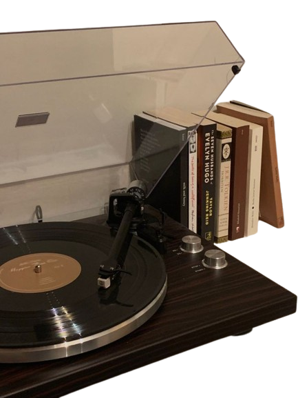
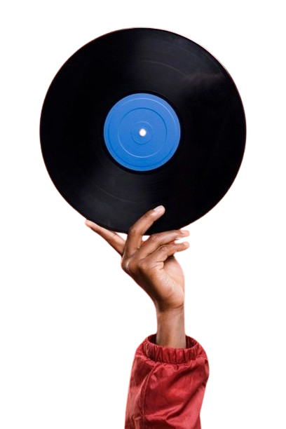

HOME
RECIPES
BLOGS
PLAYLISTS
CONTACT

Here are some playlists to vibe to while cooking:)
Playlists curated by me for a BOMBOCLATIC cooking experience!

Conciertos mentales por la noche
Escapism
Jazzy Escapades
Thou must gatekeepeth
Pov:It's the 2000's
Cloud nine nOstalgia